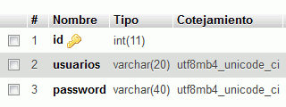

Se entregará un archivo comprimido (cuyo nombre sea el nombre del alumno) que contenga una carpeta phpmyadmin que contenga a su vez:
las capturas de pantalla del escritorio completo, (que se llamen pma-X.png donde X sea el número de captura).
la copia de seguridad de la base de datos y la copia modificada.
1. Creación de la base de datos
Entre en phpMyAdmin como usuario root y crear un usuario de MySQL con nombre iaw_su_nombre, contraseña iaw_su_nombre y que pueda tener varias bases de datos.
Entre en phpMyAdmin como usuario iaw_su_nombre.
Cree una base de datos con cotejamiento utf8mb4_unicode_ci.
Cree una tabla usuarios con los siguientes campos:
id INT UNSIGNED PRIMARY AUTO_INCREMENT
usuario VARCHAR(20)
password VARCHAR(40),
Haga una captura de pantalla donde se vea la estructura de la tabla:

Insertar varios registros en la tabla usuarios:
usuario: root. password: root.
usuario: nombre-alumno. password: lo-que-sea.
etc.
2. Copia de seguridad
Entre en phpMyAdmin como usuario iaw_su_nombre y exporte la base de datos al fichero su-nombre-bd.sql.
3. Nueva base de datos
Haga una copia del fichero su-nombre-bd-nueva.sql
Modifique el fichero para que corresponda a una nueva base de datos y añada algún registro más.
Entre en phpMyAdmin como usuario iaw_su_nombre e importe el fichero modificado.
Haga una captura de pantalla que muestre que los datos se han importado correctamente.